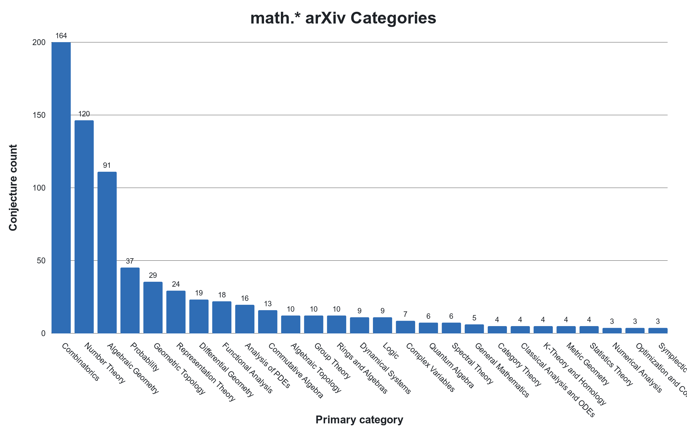
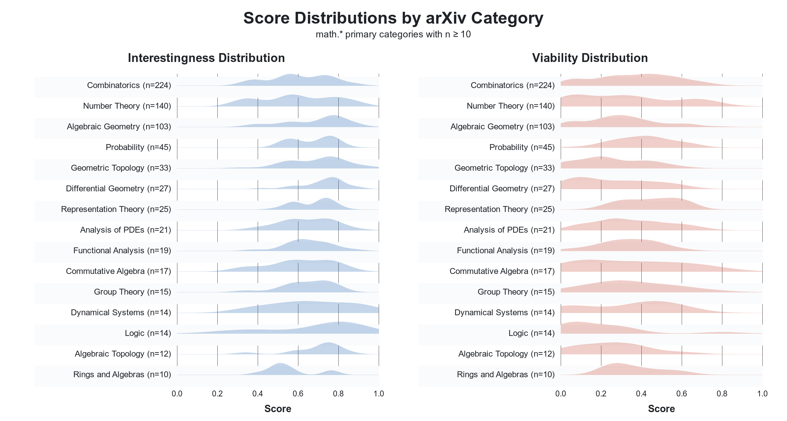

The mathematics literature is an ongoing discussion amongst the mathematical community, spanning both time and place. From this perspective, conjectures have a particularly important role, functioning as a direct call to the community to investigate a notable and unproven claim.
We are releasing OpenConjecture, a living dataset of conjectures extracted from recent ArXiv papers. OpenConjecture is motivated by the observation that conjectures are scattered across a massive volume of papers uploaded each month. As the potential for AI acceleration of mathematics research increases, the value of organizing conjectures in one place has grown. Today's release contains 890 conjectures from papers uploaded between February 2, 2026 and March 17, 2026. We plan to update it weekly.
There are a small number of other datasets that collect open math problems, e.g. FrontierMath: Open Problems and our own ACD. These are well-curated datasets. However, datasets are small and represent only a small slice of the field.1 In contrast, OpenConjecture samples from a wide variety of problems that, because of the way they are posed (as conjectures), suggest they are open and often interesting. Our approach is similar to ArxivMath, which also scrapes problems from recently published arXiv math papers. OpenConjecture, though, is composed of problems that have no known proofs or solutions.
For each conjecture in OpenConjecture, we use an LLM to estimate conjecture tractability (could an expert resolve this in an afternoon vs. would it require a fundamentally new idea) and the extent a conjecture is ‘interesting’ (based on potential impact). We also use GPT-5.4 Thinking (xhigh) to attempt solutions on 20 of the most tractable conjectures. Of these 20, the model claimed to have reached a conclusion in 6 cases: in 2 cases it claimed to have confirmed an open conjecture, and in 4 cases it claims to have disproven the conjecture. In one of the cleanest examples, GPT-5.4 claimed a simple counterexample2 to a conjecture on kernel quantile discrepancy rates published in a recent ICML 2025 paper. Summaries, discussion of the overlap with the prior literature, and the full proof attempts can be found here.
It is important to note that the LLM-based assessments of both the interestingness/tractability of a problem, as well as LLM claims to proofs and counterexamples, must be taken with a healthy dose of skepticism. We are not experts in these fields. However, the idea of using LLMs to autonomously solve open problems in mathematics is now routinely discussed. The exercise of tasking GPT-5.4 with solving a subset of only roughly curated conjectures helps us to better understand what this might look like in real, research mathematics.
OpenConjecture
By sampling conjectures from papers recently uploaded to the ArXiv, OpenConjecture collects problems that are (1) of interest to working mathematicians, (2) are believed to be open, and (3) assessed to be sufficiently difficult to present to the community. Our scrape collects conjectures from a long-tail of subfields. The field with the most conjectures was combinatorics, followed by number theory, and then algebraic geometry.

We used GPT-5-mini to label if the conjecture is currently open (unlike LLMs, humans do not have internet scale knowledge so even world-class experts can sometimes miss a relevant result that appeared in a distant field). We also ask GPT-5-mini to score conjectures for their mathematical interestingness and near-term solution viability, i.e. their tractability. This helped to filter out restatements of famous conjectures from survey papers and vague conjectures which likely played a rhetorical role within the paper they were pulled from. The distribution of these scores (via KDE) is shown below. Intriguingly, representation theory conjectures tended to be rated as both highly interesting and viable. On the other hand, algebraic topology conjectures are scored very interesting, but not very viable/tractable. It is not clear to what extent the assessments reflect the nature of the conjectures vs. biases of GPT-5-mini.

GPT-5.4 Solution Attempts
We use GPT-5.4 Thinking (xhigh) to attempt proofs of the 20 conjectures which were assessed to be most viable. Of these, the model claimed to have reached a conclusion in six cases (claiming to confirm two of the conjectures and providing counterexamples for 4). The (claimed) disproven conjectures were in probability, mathematical statistics, and metric geometry, and the confirmations were from commutative algebra and number theory. In all examples, we had the model discuss the novelty of its resolution, i.e., how close the attempt was to prior literature (see “Literature overlap”). While most attempts appear to heavily leverage existing literature, at least one counterexample (the conjecture around kernel quantile discrepancy rates) was judged to be a relatively novel contribution. Finally, we also ask the model to judge how well-specified each conjecture is. From our perspective as non-experts, the model appeared overly-critical, e.g., it often marked a conjecture as not well-specified if it used even mildly ambiguous notation. Still, this points to a potential limitation of this dataset. A summary of the attempts and links to the full proofs can be found here.
Finally, we used Codex (again, with GPT-5.4 Thinking) to attempt Lean formalizations of 6 of the 20 proof attempts, linked here. In 4 of the 6 cases, the corresponding formalization compiled in Lean. As non-experts, however, we are hesitant to draw strong conclusions about how well these formalizations correspond to their underlying natural-language proofs. In one of the unsuccessful formalization attempts, the model appears to have identified a mistake in the original natural language proof attempt. As with the prior labeling results, these should be interpreted with caution, as we did not independently verify the proofs / Lean formalizations. Even so, we think this exercise gives a useful sense of what an ambitious pipeline of conjecturing, proving, and formalization might look like for mathematics.
Notes
- They also run the risk of being solved, soon. For example, there is a recent proposed solution to one of the 15 FrontierMath: Open Problems that has received some attention. ↩
- Although this counterexample proved too difficult for GPT-5.4 Codex to formalize in Lean, likely due to limited
mathlibcoverage for probability asymptotics. ↩